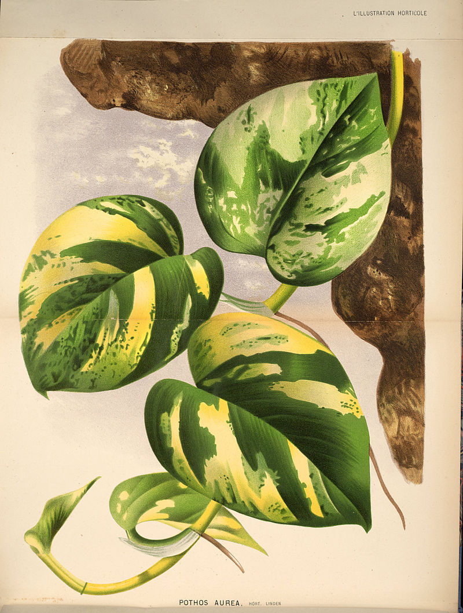

Golden Pothos
Epipremnum aureum
This resilient vining plant is known for its heart-shaped leaves and stunning variegation. Nicknamed the 'Devil's Ivy', it's remarkably adaptable and a beginner-friendly option.
Care Tips
- Sunlight: Tolerates low light but thrives in bright, indirect light.
- Watering: Water when the topsoil feels dry to the touch.
- Soil: Well-draining potting mix.
- Other Notes: Can be grown in pots or as a cascading climber. Benefits from occasional pruning.
Common Problems
- Yellowing Leaves: Often caused by overwatering. Less frequent watering may be needed.
- Leggy Growth: Indicates insufficient light. Move to a brighter location.
- Brown Spots: Could be sunburn or insufficient humidity. Address either concern.
Propagation
Golden Pothos is extremely easy to propagate! Here's how:
- Take stem cuttings with at least one node (the bumpy part on the stem).
- You can root cuttings in water or directly in moist soil.
- Place the cutting in a bright, warm location and keep medium moist.